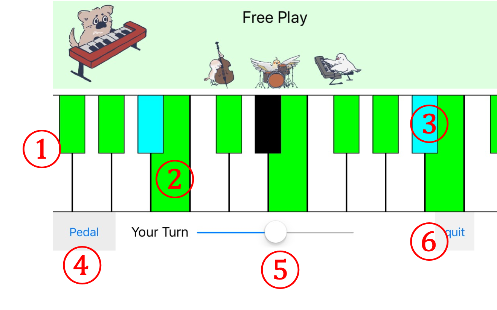

演奏画面説明
ピアノ鍵盤と同じレイアウトであり、直感的に操作することができます。

- あなたが演奏するための鍵盤です。ピアノ鍵盤と同じようにレイアウトされています。
- 一曲のプレイ中常に緑に着色され、MinorもしくはMajorPentatonicScaleの構成音であることを示しています。それって何？という方でも、この鍵盤だけを使って演奏すればあら不思議、それっぽい演奏になります。お試しあれ。
- 一曲のプレイ中、たまに水色に着色される鍵盤であり、小節ごとに適宜設定されたテンションノートであることを示しています。緑の鍵盤と同じように使うことができます。
- ピアノのペダルと同じ役割を果たすボタンです。普段は鍵盤から指を離すと音が止まりますが、このボタンを押している間は、指を離しても音が鳴り続けます。
- スライドさせることで、鍵盤を横にスクロールさせられます。
- このボタンから、演奏をやめてメインメニューに戻ることができます。